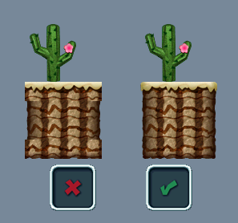
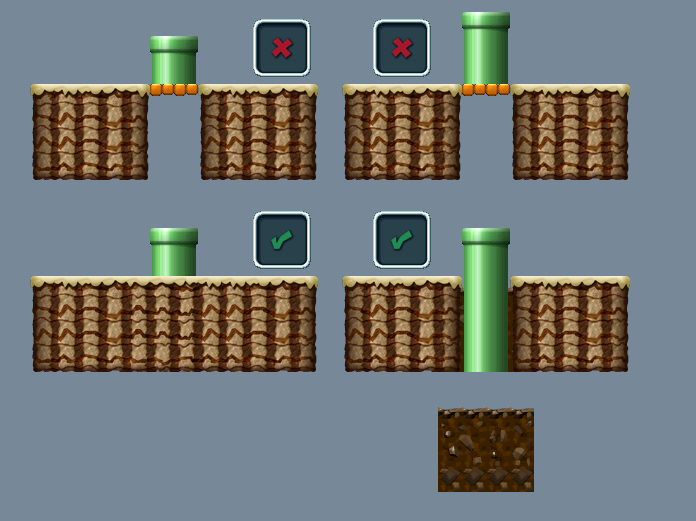
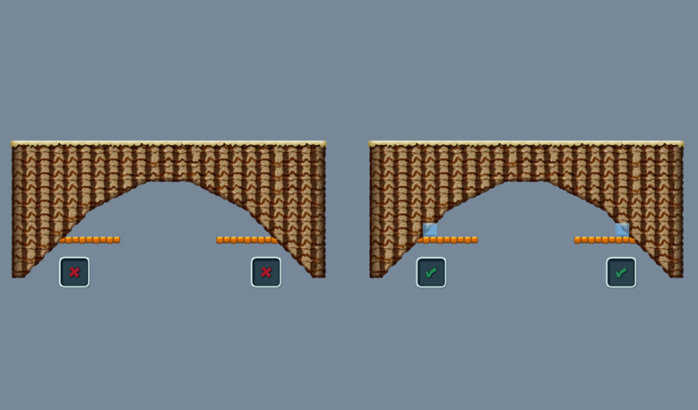

|
Chickensaver
|
blarg
|
 Koopa Sprite Ripper

Posts: 93/113
Since: 08-31-17
Last post: 21 days
Last view: 3 days
|
Tiling errors are quite common for newcomers to nsmbw hacking. Hopefully after reading this thread, most of the common tiling errors will be cleaned up, making way for aesthetically pleasing levels. Pictures will be provided with captions below them for better understanding. If there is another tiling error you want to be included, message me on discord or comment it here. I'll add it to the list.
CREDITS:
Chickensaver
Zementblock

A common error for beginners is shown above. Using the corner tiles is very important so that the levels don't look unfinished and generally ugly.

Here is another corner error, this time on the insides of the corners. This is just as important as the picture above.

While this isn't specifically a tile error, it is good practice to make blocks three squares above the ground, not two.

Very small holes in the ground simply look odd. Holes should be wide enough to be jumps, not too thin.

Coins should definitely be placed in levels, because levels with few coins are quite bland. However, coins shouldn't be overly used in single locations. Coins should be thoroughly dispersed through the level, perhaps in jump arcs. If jump arcs aren't something you like, putting them on the ground is still possible, just don't let them be directly on the edge of the platform.

Here's another styling tip for coins on top of blocks.

While background rock does look pleasing, you should make sure you have the proper borders around them.

While on the topic of background rock formations, you should be sure not to make them too flat. Also, the one by one tiles of rock can be very repetitive, so they shouldn't be used in long rows.

Though it may seem obvious, some people don't know how to make multiple decorations on top of each other. Simply using different layers will fix this problem. Be wary of doing even the correct version of this too much though, as some people don't like too many background decorations piled on top of each other.

This image of pipes had two problems. The yellow pipe should be fully behind the ground and the green pipe shouldn't jaggedly cut off the tiles of the ground. The Hole that the green pipe makes should also be partially filled with background rock as well. Another problem to some people is that they don't like seeing these two ways to make pipes go into the ground right next to each other, so choose only one option per level.

This image is a bit confusing. The top left is problematic because when Mario exits the pipe, his feet can be seen at the bottom of the pipe. To fix this problem, the pipe can be extended. Unfortunately, there is still a problem. Both of the top pictures show a pipe going into solid on top platforms, which makes no sense. The two bottom pictures show ways to remove this solid on top platform.

Another problem with pipes is that they don't really make sense when placed on solid on top tiles like the ones shown above. One way to fix this is to add lighter, layer 2 pipes, simply to be decorations. Unfortunately, the pipe shown here would require a new tileset, so it is better to simply not put pipes there.

Sometimes, people like to decorate their levels with rocks jutting out of the sides of the ground. This is a pleasing decoration but only when done right. The background should be filled in to prevent a hole into the BG of the level. Simple rock is a good way to get rid of this space.

Another error with rock blocks is when they are too big. Make sure to use smaller blocks when decorating. Though it may seem more time consuming, it will result in a better looking decoration. Also, blocks of the same type shouldn't be placed directly next to each other if it can be helped.

When adding layer 2 solid-on-top tiles next to slopes, there is a possibility of having the player glitch through the floor with the small gap. Adding invisible tiles will sometimes help.

When a pow-block is used, the screen shakes, so all tiles must be extended one tile outside of the zone border to ensure no graphical problems. When pits are added to a level, Mario dies only after he falls beyond the zone, thus, pits should have four-tile extensions. Though it isn't shown in this picture, the top of the screen extends about 10 tiles above the zone, making above zone secrets like in original nsmbw's 1-3 possible.

In this image, Zementblock shows how tilesets usually work. This is very important information for newcomers wanting to fix their tiling errors.
SEE THE WIKI FOR NEW CHANGES!
|
|
Vadelma Kisu77
|
Posted on 02-11-18, 10:02 pm
blarg
|
 Red Goomba Random NSMBU hacker, I guess
Posts: 36/43
Since: 11-21-17
Last post: 148 days
Last view: 56 days
|
Really useful tutorial Chickensaver! Im sure this will help many people to get better when they start!
_________________________
Moved to NSMBU hacking because weegee.
|